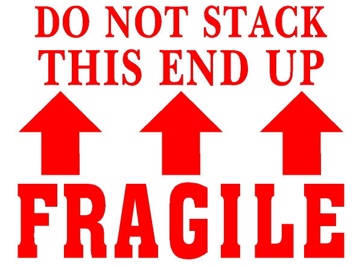

Previous Work

Techniques
- Abstraction-based techniques
- Analysis of possible inference chains
- Selection based on symbol count
- Selection based on symbol overlap
- Selection based on models
- Selection based on machine learning from previous proofs
General Approach
- Order the axioms by relevance to the conjecture
- Select axioms with respect to the ordering
- Reselect if no proof found
Common Weakness
- Select axioms only at top of relevance order
- Fragile - one necessary axiom low in order